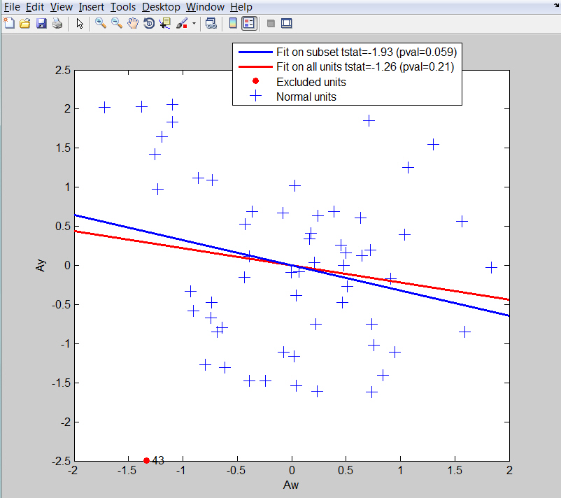
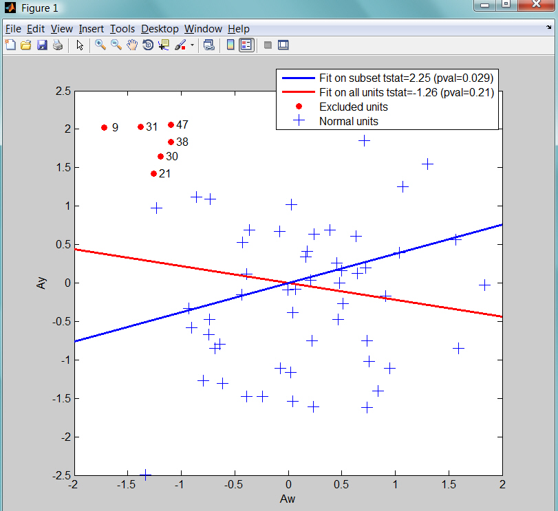

| Flexible Statistics Data Analysis Toolbox™ |
|
t test for an additional explanatory variable
[out] = addt(y,X,w)
[out] = addt(y,X,w,param1,val1,param2,val2,...)
[out]=addt(y,X,w) computes the t test for additional explanatory variable w and the estimate of σ2 from the augmented model.
y is a vector of length n containing the response values, while X is the n-by-p-1 matrix which contains (in the columns) the values of p-1 predictive terms and w is a vector of length n containing an additional exploratory variable
[out] = addt(y,X,w) returns the following information
b — estimate of the slope for additional explanatory variable
S2add − scalar, estimate of σ2
for the augmented model
Tadd — scalar, added T test for additional explanatory variable w
pval — scalar, p-value of the added T test variable w
|
Note addt automatically includes a constant term in the model. Do not enter a column of 1s directly into X. This function is called at each step of the forward search by FSRaddt |
addt(y,X,w,param1,val1,param2,val2,...) specifies one or more of the name/value pairs described in the following table.
| Parameter | Value |
|---|---|
| 'intercept' |
If 1, a model with constant term will be fitted (default) else no constant term will be included. |
| 'la' |
scalar or '' (empty value) which specifies for which Box Cox transformation parameter it is necessary to compute the t statistic for the additional variable. If la is an empty value (default) no transformation is used. |
| 'plots' |
Scalar. If plots=1 the added variable plot is produced else (default) no plot is produced. |
| 'units' |
vector containing the list of units which has to be removed in the computation of the test. |
| 'textlab' |
if textlab='' (default), no text label is written on the plot for units else text labels of units are added on the plot |
| 'FontSize' |
Scalar which controls the font size of the labels of the axes. Default value is 12. |
| 'SizeAxesNum' |
Scalar which controls the size of the numbers of the axes. Default value is 10. |
Compute the added T test for the wool dataset
% load wool data
XX=load('wool.txt');
% Define y
y=log(XX(:,end));
% Define X
X=XX(:,1:end-2);
% Define w
w=XX(:,end-1);
Compute added t test for variable w
[out]=addt(y,X,w);
out.Tadd (equal to -8.9707) is exactly equal to stats.tstat.t(4) obtained as
whichstats = {'tstat','mse'};
stats = regstats(y,XX(:,1:end-1),'linear',whichstats);
Similarly out.S2add (equal to 0.0345) is exactly equal to stats.mse (estimate
of σ2 for augmented
model)
Compute the added T test for the multiple regression dataset
% load the multiple regression dataset
load('multiple_regression.txt');
% define y
y=multiple_regression(:,end);
% define X
X=multiple_regression(:,1:end-1);
Compare the added variable plot based on all units with that which excludes unit 43
[out]=addt(y,X(:,2:3),X(:,1),'plots',1,'units',[43]','textlab','y');

Now compare the added variable plot based on all units with that which excludes units 9,21,30,31,38 and 47
[out]=addt(y,X(:,2:3),X(:,1),'plots',1,'units',[9 21 30 31 38 47]','textlab','y');

The effect of this group of units is clear.
|
|
add2yx.html | bc.html |
|